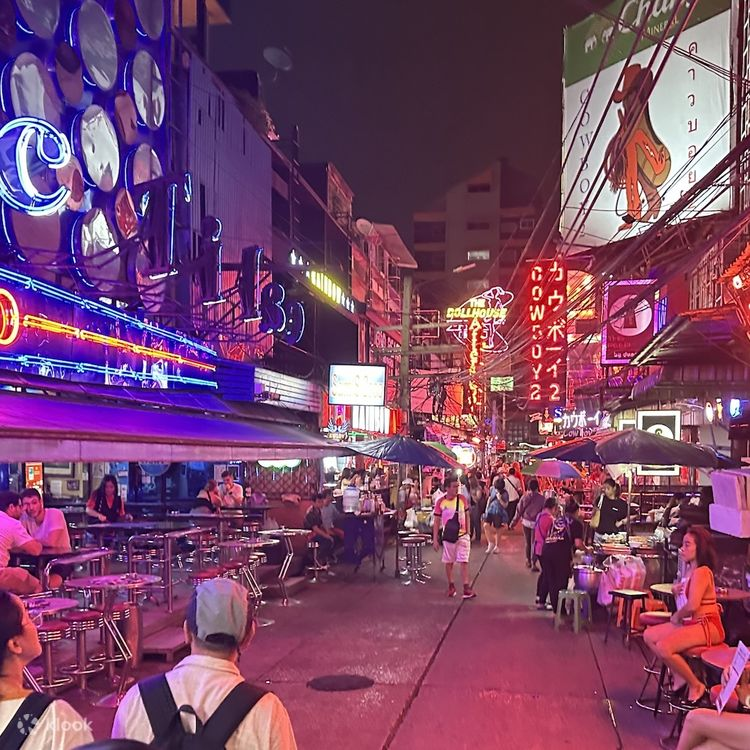
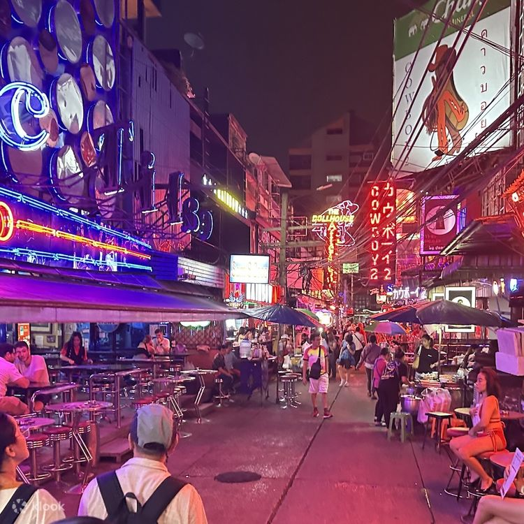
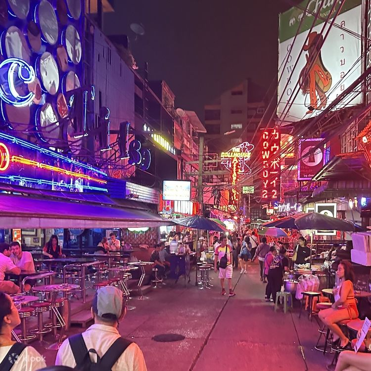
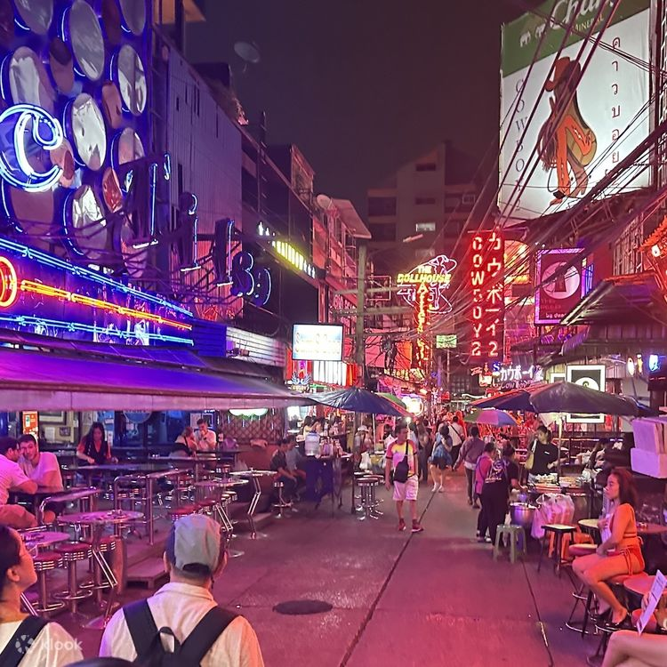

I absolutely love tomyam, especially the Thai version! Whenever I go out with my family or friends, we always search for Thai restaurants, whether it’s locally or during our travels. My family and I even make trips to Thailand especially Bangkok and Hatyai just to enjoy their authentic local food. The spicy, sour taste of tomyam is unbeatable and always reminds me of our food adventures together.
My favourite drink is definitely coffee. Whether it's iced or hot, I enjoy sipping coffee while doing assignments late at night or staying awake during long-distance drives. It's my go-to beverage that helps me stay focused and energized. There’s something comforting about the aroma of coffee that keeps me calm and productive, especially during hectic university weeks.
When it comes to dream destinations, New York City is at the top of my list. I’ve always been fascinated by its stunning skyscrapers, bustling city life, and the magical nighttime skyline. I don’t exactly know why, but something about tall buildings and bright lights excites me it feels like the heart of ambition and creativity. I dream of standing in Times Square one day, surrounded by the energy of the city that never sleeps.
Apart from New York, another country that has captured my heart is South Korea. I visited in 2017 and it left a lasting impression on me. The cool breeze, beautiful weather, and peaceful atmosphere made me fall in love instantly. I enjoy watching K-dramas, which deepened my love for Korean culture. From the food to the friendly people, Korea has always felt like a place I’d love to return to again someday.